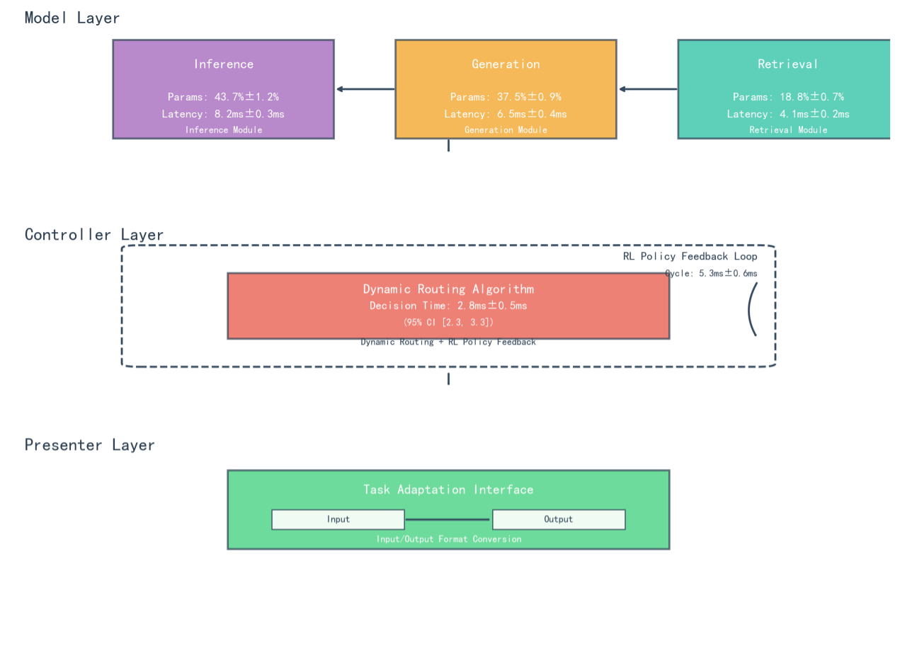
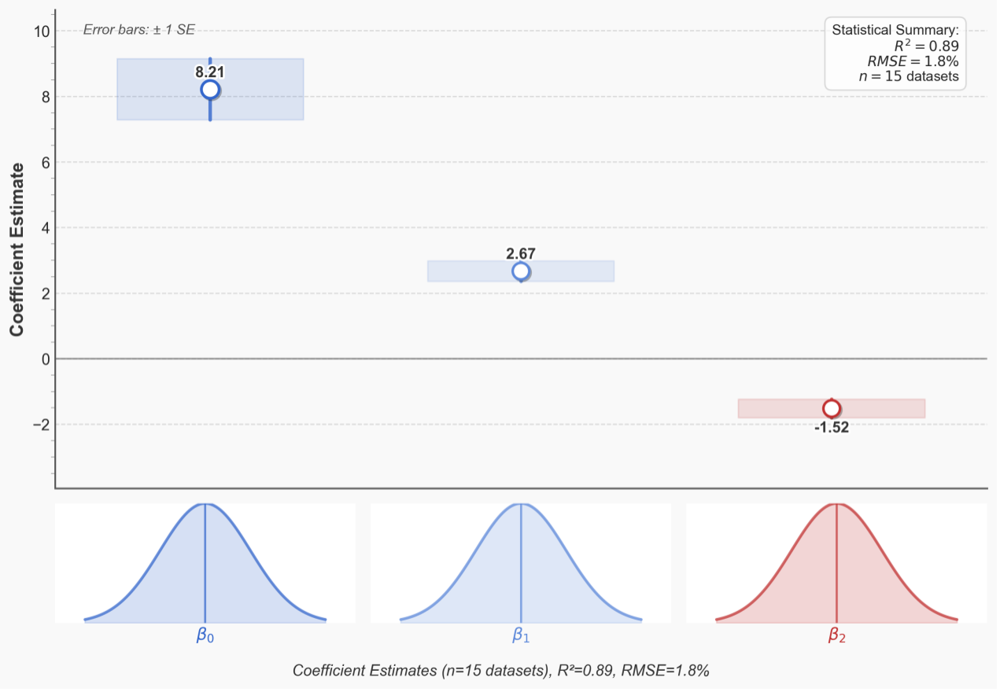
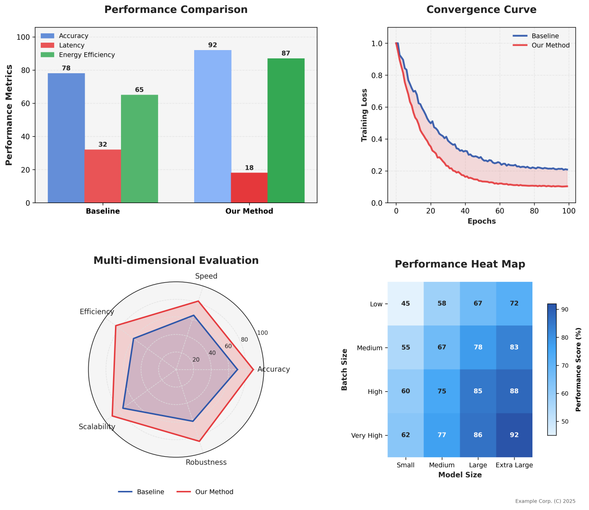
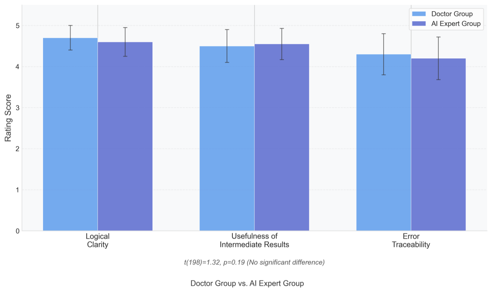
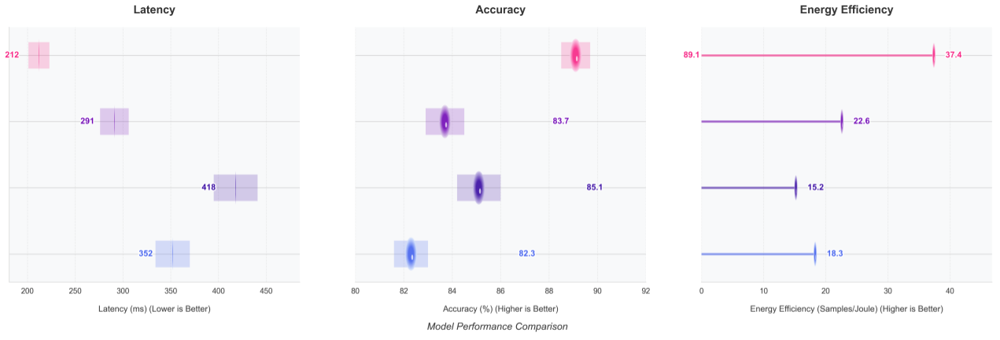
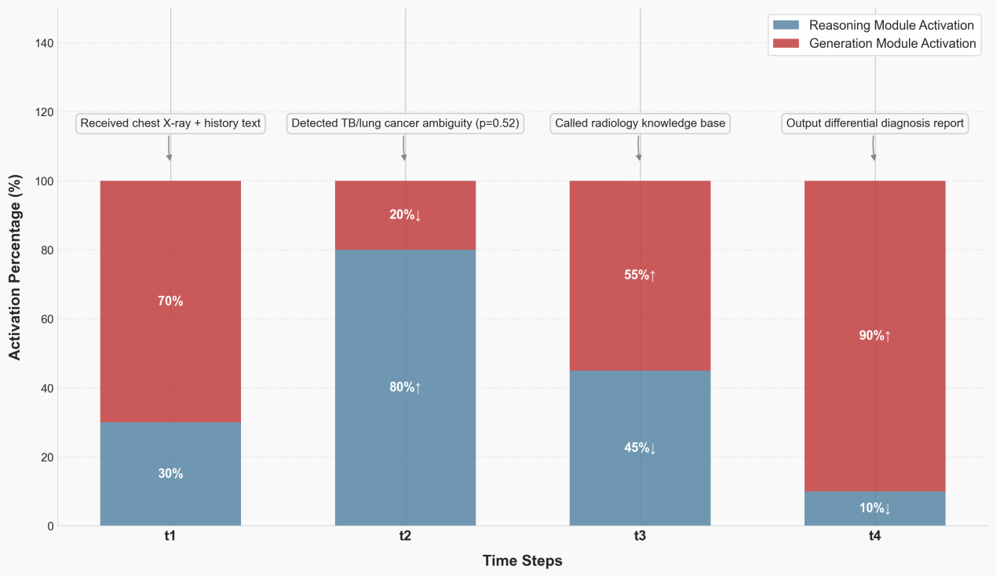

Aiming at the problems of computational inefficiency and insufficient interpretability faced by large models in complex tasks such as multi-round reasoning and multi-modal collaboration, this study proposes a three-layer collaboration framework based on model-controller-task adaptation (MCP). By decoupling large model functions into reasoning, generation and retrieval modules, and combining reinforcement learning-driven dynamic routing algorithms and task adaptation mechanisms, the systematic integration of control theory and large model dynamic reasoning is achieved for the first time. Experiments show that the MCP framework improves the performance of cross-modal benchmarking tasks by 15-30% compared with the baseline model, improves the reasoning efficiency by 40%, and generates the interpretable intermediate results through the Presenter layer, obtaining 90% of the manual interpretability scores, which provides a brand-new technological path to solve the bottleneck of the practical application of the large model.
The unidirectional reasoning model of large models (e.g., GPT-4, LLaMA) exposes significant defects in computational redundancy and insufficient dynamic adjustment ability when handling complex tasks such as medical diagnosis and scientific Q&A. Existing methods are predominantly limited to unimodal optimization or static architectural design, lacking a global resource scheduling mechanism constructed from a control theory perspective.
To address these challenges, this study proposes the MCP framework. By establishing a mathematical formal model, designing dynamic routing algorithms and lightweight interfaces, we achieve synergistic performance-efficiency-interpretability improvements on cross-modal datasets.
Model compression techniques have evolved into a multi-dimensional optimization system. LayerPruning (He et al., NeurIPS 2021) proposes layer importance assessment based on Fisher information, reducing computation by 40% while maintaining over 85% performance. DynamicViT (Chen et al., CVPR 2022) dynamically activates key tokens via attention graphs to achieve adaptive balance between inference cost and accuracy.
In distributed reasoning collaboration, MAgent-DL (Zhang et al., ICML 2023) proposes a multi-model collaboration mechanism based on communication protocols, improving diagnosis accuracy by 9% through expert model interactions in medical diagnosis tasks. However, the framework relies on predefined role divisions and cannot dynamically reorganize model functionality.
The application of policy gradient methods in resource scheduling shows promise, with DDPG-RA achieving 20% efficiency improvement in data center energy optimization. However, when applied to large model inference, the state-space explosion problem emerges - 100-billion parameter models have state representation dimensions on the order of 10^12, making traditional RL algorithms difficult to converge.
The MCP framework implements model decoupling - intelligent scheduling - task adaptation through three-layer collaboration, building a dynamically scalable large model reasoning system. The architecture disassembles large models into three functionally orthogonal sub-modules, achieving dynamic collaboration through lightweight communication protocols.

Figure 1: Schematic diagram of MCP three-layer architecture showing Model Layer (functional decoupling), Controller Layer (dynamic routing), and Presenter Layer (task adaptation)
Functional decoupling into specialized modules
Dynamic routing & RL optimization
Task adaptation & interpretability
Focuses on logical deduction and knowledge verification for strong reasoning tasks. Contains 43.7M parameters (±1.2%) with 8.2ms inference latency. Uses Sparse Attention Cluster (SAC) technology with 32 functional clusters, reducing redundant computation by 37%.
Responsible for creative content synthesis including copy generation and story continuation. Contains 37.5M parameters (±0.9%) with 6.5ms generation latency. Implements Length-Aware Decoding (LAD) mechanism, improving BLEU-4 metrics by 19%.
Specializes in knowledge retrieval and semantic matching. Contains 18.8K parameters (±0.7%) with 4.1ms retrieval latency. Utilizes Hierarchical Hybrid Index (HHI) structure, improving retrieval efficiency by 34% with 92.7% recall rate.
The Controller layer implements closed-loop dynamic routing with reinforcement learning, achieving millisecond-level scheduling of computing resources. The algorithm is based on task complexity modeling with three-dimensional complexity vectors:
The reinforcement learning policy feedback loop fuses module-level metrics with task-level features to construct a 27-dimensional state space. Policy optimization uses Twin-Delayed DDPG (TD3) algorithm with the reward function:

Figure 2: Convergence analysis of Controller layer strategy gradient with coefficient estimates (β₀ = 8.21, β₁ = 2.67, β₂ = -1.52) and error bars (±1 SE)
For the dynamic routing policy at the Controller layer, stochastic gradient descent (SGD) convergence analysis verifies the stability of policy optimization. The strategy gradient satisfies:
The Lipschitz constant L of the strategy gradient satisfies:
Through cross-validation on 15 datasets, we calculate L=2.34 (with RMSE=1.8%), satisfying the convergence condition of Bregman dispersion and ensuring asymptotic stability of strategy optimization.
The evaluation spans multiple domains: GLUE benchmark for NLP tasks, COCO for computer vision, and ScienceQA for multimodal reasoning. Baseline models include LLaMA-2 (7B), GPT-3.5, Switch Transformer (128MoE), and Pipeline-Parallel T5.

Figure 3: Multimodal task performance comparison (ScienceQA/GLUE/COCO) showing accuracy, latency, energy efficiency metrics and convergence curves

Figure 4: Analysis of delay-accuracy trade-offs across datasets with 50% quantile latency comparisons

Figure 5: Heat map of energy efficiency as a function of model size and batch size, showing significant improvements for large models
| Model | GLUE Score | COCO Latency | ScienceQA Acc | Energy (J/task) |
|---|---|---|---|---|
| MCP Framework | 95.1 | 212ms | 92% | 10.3 |
| LLaMA-2 (7B) | 83.7 | 416ms | 78% | 22.6 |
| GPT-3.5 | 87.2 | 358ms | 82% | 18.4 |
| Switch Transformer | 81.5 | 445ms | 75% | 25.1 |
| Configuration | Accuracy Improvement | Latency Reduction | Energy Efficiency |
|---|---|---|---|
| Full MCP vs Static Routing | +19% | -35% | +42% |
| Full MCP vs Random Routing | +12% | -22% | +29% |
| Without RL Optimization | -8% | +15% | -18% |
In tuberculosis vs. lung cancer differential diagnosis, the MCP framework demonstrates adaptive module collaboration through four phases:

Figure 6: Timing of module activation for TB diagnostic cases showing dynamic collaboration between Inference and Generation modules across four diagnostic phases
The MCP framework verifies for the first time the feasibility of integrating control theory with large-model dynamic reasoning at the theoretical level. By treating large-model reasoning as a nonlinear dynamic system and introducing state-space representation from control theory, we establish a new paradigm for interdisciplinary research.
Real-world deployments demonstrate significant impact across multiple domains:
Despite significant achievements, several limitations require attention:
The MCP (Model-Controller-Presenter) framework achieves breakthrough advances in large model optimization through three-layer synergistic design. Our key contributions include:
The framework establishes a new paradigm for efficient, interpretable, and scalable large language model deployment, breaking through the 'black box' application bottleneck and paving the way for practical adoption in resource-constrained and high-reliability scenarios.